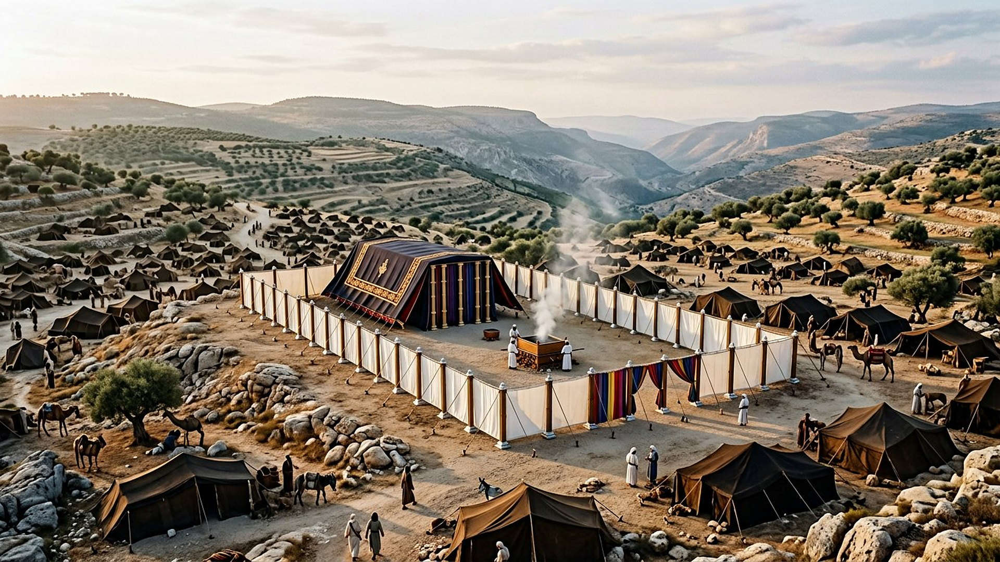
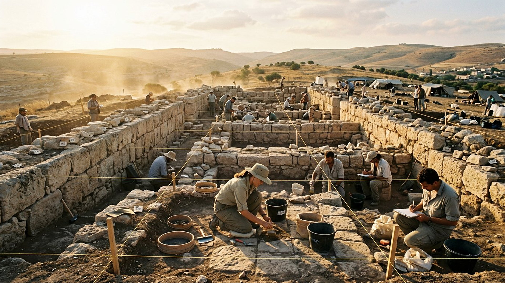
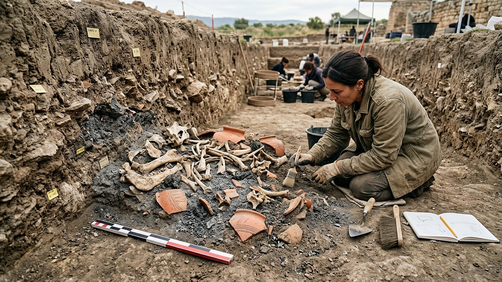

Ce qui soutient :
Ce qui conteste :

Salle 29 — Fouilles en cours DÉBATTU
« Allez donc au lieu qui fut à Shiloh, où j'avais fait d'abord résider mon nom, et voyez ce que je lui ai fait. » — Jérémie 7:12 (d'après Crampon 1904)
Reconstitution numérique — la cour du Tabernacle sur le plateau de Shiloh (vision d'artiste, non un relevé).
Pendant la période des Juges, le sanctuaire d'Israël — le Tabernacle, la tente qui abrite l'arche — est installé à Shiloh, dans les collines d'Éphraïm, au nord de Béthel (Josué 18:1). C'est là qu'Anne vient prier et que le jeune Samuel entend son appel (1 Samuel 1-3) ; c'est de là que l'arche est emmenée au combat et capturée par les Philistins (1 Samuel 4) ; et des siècles plus tard, Jérémie renverra Jérusalem à ce précédent redoutable : un sanctuaire abandonné pour cause d'infidélité (Jérémie 7:12-14 ; Psaume 78:60). Shiloh est donc, dans le récit, la première « capitale » cultuelle d'Israël — et la première leçon du musée sur les sanctuaires que Dieu quitte.
Depuis 2017, l'équipe des Associates for Biblical Research (ABR) fouille le tel de Shiloh (Khirbet Seilun). Cette salle est née de leurs annonces de 2025-2026 — et elle porte, du titre à la dernière carte, le badge DÉBATTU : c'est une salle-chantier, où le visiteur pèse des indices, pas un verdict.

Choisissez un indice et lisez, face à face, ce qui le soutient et ce qui le conteste.
Ce qui soutient :
Ce qui conteste :

DONNÉE HISTORIQUE
Dépôt sacrificiel massif, objets cultuels, bâtiment monumental : quelles que soient les datations retenues, Shiloh a abrité un culte organisé et durable à l'âge du Fer — ce que le récit biblique présuppose. La controverse porte sur l'identité (cananéenne ou israélite) et les dates, pas sur l'existence du sanctuaire.
DÉBATTU
Aucune inscription ne nomme le Tabernacle, aucune arche n'a été trouvée — les fouilleurs eux-mêmes parlent d'indices convergents, et la presse qui titre « l'arche retrouvée » outrepasse leurs résultats. Le bâtiment a connu plusieurs phases (jusqu'à l'époque romaine), ce qui complique toute identification simple. Le musée attend la publication complète et la contradiction entre pairs, comme il l'a fait pour chaque pièce depuis la salle 01.
LECTURE PROPHÉTIQUE
La prophétie liée à Shiloh est un avertissement, pas une date : Jérémie y montre à Jérusalem son propre avenir si elle imite l'infidélité de Shiloh — « je traiterai cette maison comme Shiloh » (7:14). Le Psaume 78:60 dit que Dieu « abandonna la demeure de Shiloh ». Prescience n'est pas fatalité, une fois de plus : l'annonce vise un changement de conduite, et le lieu fouillé aujourd'hui en est le témoin de Pierre.
Salle 25 : les bains des pèlerins · Salle 20 : les objections · Méthode et sources
Bienvenue dans la salle de Shiloh, la salle chantier du musée. Avant Jérusalem, le sanctuaire d'Israël se trouvait à Shiloh, dans les collines d'Éphraïm. Depuis 2017, une équipe d'archéologues y fouille un grand bâtiment orienté d'est en ouest, dont le mur sud a été retrouvé en 2026. Autour : des objets de culte et un immense dépôt d'ossements d'animaux. Le bâtiment du Tabernacle a-t-il été retrouvé ? Cette salle refuse de trancher à votre place. Choisissez un indice, lisez ce qui le soutient et ce qui le conteste, puis pesez. Une chose est sûre : Shiloh a abrité un lieu de culte majeur, et son abandon, raconté par Jérémie, reste une leçon que le musée prend au sérieux.